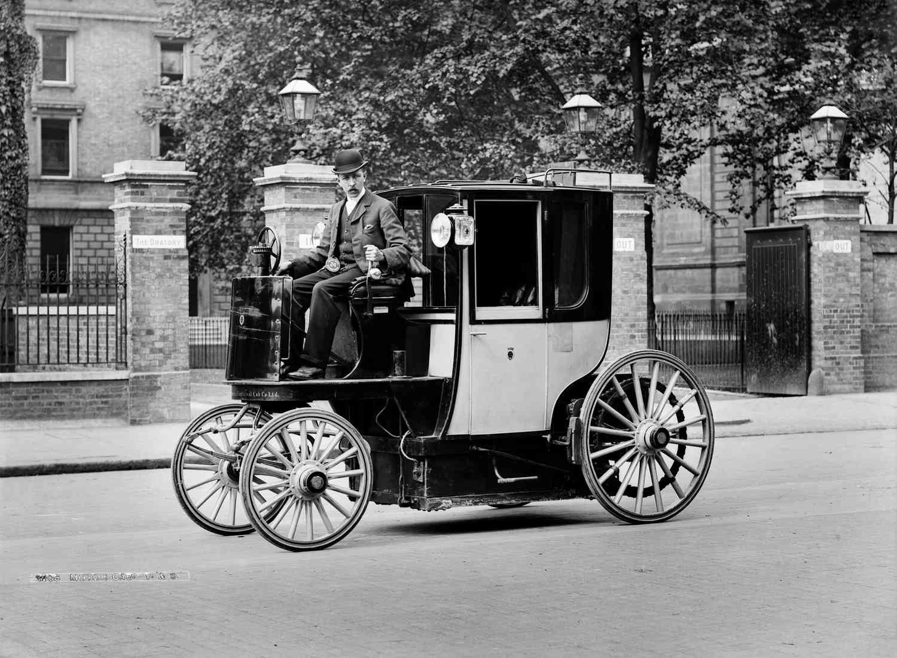
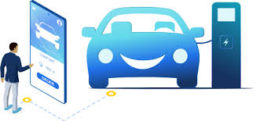
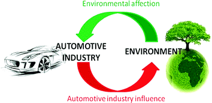
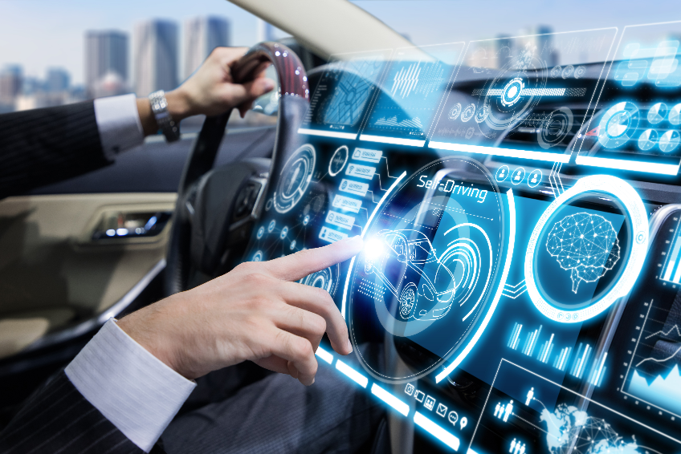

Evolution of Automobiles: From Past to Present
Introduction
Automobiles have revolutionized the way we travel and interact with the world. Since the inception of the first automobile, these machines have not only transformed transportation but have also significantly impacted various aspects of our lives. This section explores the profound influence of automobiles on society, economy, and culture.
History of Automobiles
A fascinating journey spanning decades, the history of automobiles features many innovators, breakthroughs, and technological advancements. This is a succinct summary of significant turning points in the history of cars.Throughout the history of autos, there has been constant improvement, from the earliest steam-powered cars to the present day of electric and driverless vehicles. The travel business has changed significantly, impacting not only how individuals travel but also the economy, society, and culture.
The history of automobiles dates back to the late 19th century when Karl Benz patented the first gasoline-powered automobile. From the Model T to the modern-day sleek vehicles, automobiles have undergone remarkable transformations. Each era brought innovations, designs, and cultural shifts that shaped the automotive industry.
Technological Advancements
The automotive industry is at the forefront of technological advancements. From hybrid engines to self-driving technology, the evolution of cars continues to push boundaries. Innovations in safety features, connectivity, and fuel efficiency are revolutionizing the driving experience, paving the way for a more efficient and intelligent automotive future.
Environmental Impact
While automobiles have offered unparalleled convenience, they have also contributed to environmental challenges. The combustion engine's emissions and the dependence on fossil fuels have raised concerns about pollution and climate change. However, the rise of electric vehicles and sustainable mobility initiatives aim to mitigate these impacts and steer the industry toward eco-friendly alternatives.
Future Trends
The future of automobiles holds exciting prospects. Advancements in electric and autonomous vehicles, along with developments in AI and smart infrastructure,...
By 2030, societal anxiety and chaos are being driven by unrelenting technological evolution, causing cyber-crime, generational conflicts and class polarisation to increase. In addition to this, advancements in AI are threatening to markedly increase competition across humanity. Due to these pressures, consumers will demand spaces and experiences that alleviate their anxieties and provide healing qualities. Transport will no longer be simply a means of getting from A to B, but also a space for escapism, and the interior spaces of vehicles will be utilised according to user needs.